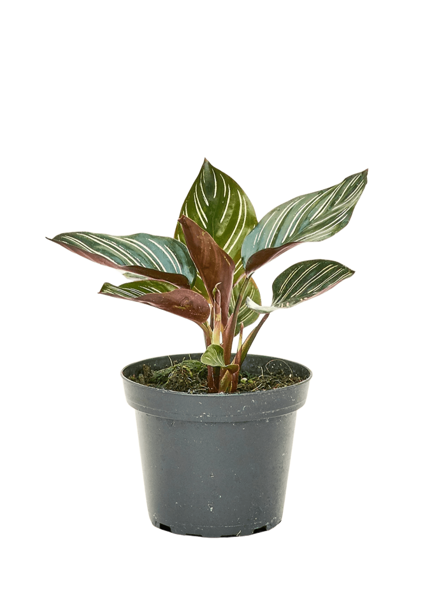

Bright and indirect light is the goal and what you want to aim for. A few feet back from an east or north-facing window is ideal. Direct sun will scorch the leaves and fade the pink and green stripes. It'll survive in medium light too, but won't grow the best.
Keep the soil consistently moist but never waterlogged or soggy. Water when the top inch feels dry, usually every 5–7 days. This plant is picky about water quality: tap water minerals and chlorine cause brown, crispy leaf edges over time, so use filtered, distilled, or rainwater if you can.
Calatheas want humidity well above the average living room 60% or higher if possible. A humidifier nearby, a pebble tray, or a spot in a steamy bathroom all help. Keep it between 65–80°F (18–27°C) and away from cold drafts, AC vents, or heaters.
Feed with a balanced liquid fertilizer diluted to half strength, once a month through spring and summer. Skip feeding entirely in fall and winter, when growth naturally slows.